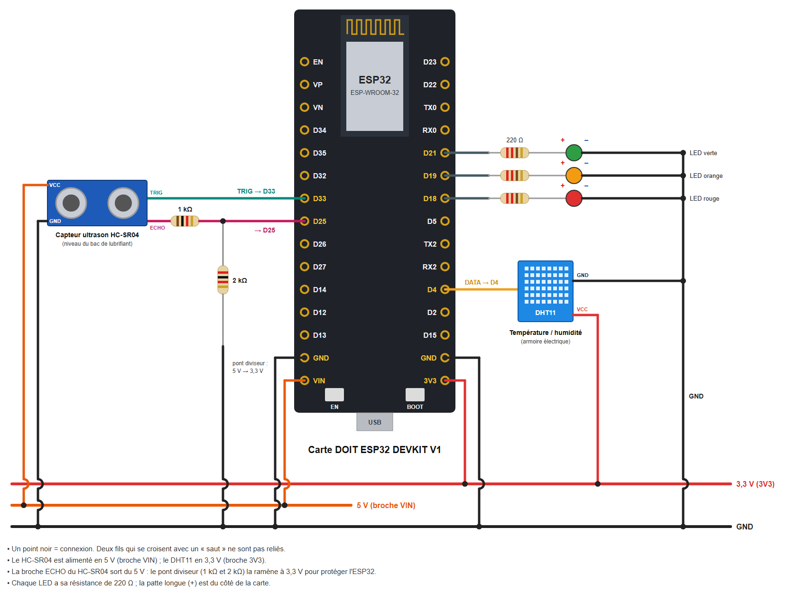

Travaux pratiques — IoT · 08.0
Première approche de l'activité maintenance : un capteur ultrason (niveau de lubrifiant), un DHT11 (armoire électrique), trois LED d'état et une page web. Seuils d'alerte et d'alarme, sans moteur ni boutons.
On simule la surveillance d'un poste automatisé. Son mécanisme est lubrifié à partir d'un bac qui ne doit pas se vider, et son armoire électrique doit rester sèche et pas trop chaude. Chaque composant joue un rôle :
Composant | Ce qu'il représente | Type de maintenance | Seuils (alerte / alarme) |
|---|---|---|---|
Capteur ultrason HC-SR04 | Le niveau du bac de lubrifiant (distance entre le capteur et la surface) | Conditionnelle | 30 % / 10 % (niveau bas) |
Capteur DHT11 | La température et l'humidité de l'armoire électrique | Conditionnelle | 30 °C / 40 °C ; humidité : alerte à 80 % |
3 LED | État de la machine : vert = normal, orange = alerte, rouge = alarme |
Règles de fonctionnement
Matériel | Remarque |
|---|---|
1 carte DOIT ESP32 DEVKIT V1 + câble micro-USB | |
1 capteur ultrason HC-SR04 | Alimenté en 5 V |
1 capteur DHT11 (module 3 broches) | Un DHT11 nu à 4 broches demande en plus une résistance de 10 kΩ entre DATA et VCC |
3 LED (verte, orange, rouge) + 3 résistances de 220 Ω | |
1 résistance de 1 kΩ + 1 résistance de 2 kΩ | Pont diviseur pour la broche ECHO (2 kΩ = deux résistances de 1 kΩ en série) |
1 plaque d'essai + fils de connexion | |
1 morceau de carton | Simule la surface du lubrifiant devant le capteur ultrason |

Composant | Broche du composant | Relier à |
|---|---|---|
HC-SR04 | VCC / GND | VIN (5 V) / GND |
HC-SR04 | TRIG | D33 |
HC-SR04 | ECHO | résistance 1 kΩ → D25, et résistance 2 kΩ entre D25 et GND |
DHT11 | VCC / DATA / GND | 3V3 / D4 / GND |
LED verte, orange, rouge | patte longue (+) via 220 Ω / patte courte (–) | D21, D19, D18 / GND |
Attention
Le programme complet est fourni : dossier ESP32_Maintenance_Machine_v0 (fichier ESP32_Maintenance_Machine_v0.ino, reproduit en annexe).
DHT sensor library (Outils > Gérer les bibliothèques).ssid, password).DOIT ESP32 DEVKIT V1 et le port, puis téléversez.115200 bauds) et notez l'adresse IP. Ouvrez la page http://<adresse IP> sur un téléphone connecté au même Wi-Fi.Notez sur votre feuille l'adresse IP de la carte (par exemple 192.168.1.42) : vous en aurez besoin pour ouvrir la page.
Ce que fait le programme :
Remarque : la chaleur des doigts ne suffit pas pour atteindre 40 °C. Pour tester l'alarme, on peut baisser le seuil TEMP_ALARME dans le programme.
Scénario | Indicateur | Valeur au passage à l'orange | Valeur au passage au rouge | Cause affichée sur la page |
|---|---|---|---|---|
B | Niveau (%) | |||
C | Température (°C) | |||
C | Humidité (%) |
// Activité IoT - Maintenance préventive d'une machine pédagogique (version v0)
// Carte : DOIT ESP32 DEVKIT V1
//
// La machine est surveillée par deux capteurs -> maintenance préventive CONDITIONNELLE :
// - le niveau du bac de lubrifiant (capteur ultrason HC-SR04)
// - la température et l'humidité de l'armoire électrique (DHT11)
// 3 LED indiquent l'état de la machine, une page web l'affiche à distance.
//
// Bibliothèque à installer (Outils > Gérer les bibliothèques) :
// - DHT sensor library (Adafruit) + Adafruit Unified Sensor
#include <WiFi.h>
#include <WebServer.h>
#include <DHT.h>
const char* ssid = "NOM_DU_RESEAU"; // nom du réseau Wi-Fi (2,4 GHz)
const char* password = "MOT_DE_PASSE"; // mot de passe du réseau Wi-Fi
// ---------- Broches
const int PIN_TRIG = 33; // HC-SR04 TRIG
const int PIN_ECHO = 25; // HC-SR04 ECHO (via pont diviseur 1 kΩ / 2 kΩ)
const int PIN_DHT = 4; // DHT11 DATA
const int LED_VERTE = 21;
const int LED_ORANGE = 19;
const int LED_ROUGE = 18;
// ---------- Seuils de maintenance (à adapter)
const int NIVEAU_ALERTE = 30; // % de lubrifiant dans le bac
const int NIVEAU_ALARME = 10;
const float TEMP_ALERTE = 30.0; // °C dans l'armoire électrique
const float TEMP_ALARME = 40.0;
const float HUM_ALERTE = 80.0; // % d'humidité (alerte seulement)
// ---------- Bac de lubrifiant : distance mesurée par le capteur placé au-dessus
const float DIST_PLEIN = 5.0; // cm quand le bac est plein
const float DIST_VIDE = 20.0; // cm quand le bac est vide
DHT dht(PIN_DHT, DHT11);
WebServer server(80);
// ---------- Variables de la machine
int niveau = 100; // %
float distance = 0; // cm
float temperature = NAN; // °C
float humidite = NAN; // %
// État de chaque indicateur : 0 = normal, 1 = alerte, 2 = alarme
int eNiveau = 0, eTemp = 0, eHum = 0;
int etat = 0;
String cause = "";
const char* NOM_ETAT[] = {"NORMAL", "ALERTE", "ALARME"};
const char* COULEUR[] = {"#2e7d32", "#ef6c00", "#c62828"};
unsigned long tMesure = 0, tDht = 0;
// ---------- Mesures
float mesurerDistance() {
digitalWrite(PIN_TRIG, LOW);
delayMicroseconds(2);
digitalWrite(PIN_TRIG, HIGH); // impulsion de 10 µs
delayMicroseconds(10);
digitalWrite(PIN_TRIG, LOW);
unsigned long duree = pulseIn(PIN_ECHO, HIGH, 30000); // attente max 30 ms
if (duree == 0) return -1; // pas d'écho
return duree * 0.0343 / 2; // vitesse du son : 343 m/s, aller-retour
}
int etatHaut(float v, float alerte, float alarme) { // plus la valeur est haute, plus c'est grave
if (v >= alarme) return 2;
if (v >= alerte) return 1;
return 0;
}
// ---------- Décision
void evaluer() {
eNiveau = (niveau <= NIVEAU_ALARME) ? 2 : (niveau <= NIVEAU_ALERTE) ? 1 : 0;
eTemp = isnan(temperature) ? 0 : etatHaut(temperature, TEMP_ALERTE, TEMP_ALARME);
eHum = (!isnan(humidite) && humidite >= HUM_ALERTE) ? 1 : 0;
etat = max(max(eNiveau, eTemp), eHum); // l'état le plus grave l'emporte
cause = "";
if (eNiveau) cause += "niveau de lubrifiant ; ";
if (eTemp) cause += "température de l'armoire ; ";
if (eHum) cause += "humidité de l'armoire ; ";
digitalWrite(LED_VERTE, etat == 0);
digitalWrite(LED_ORANGE, etat == 1);
digitalWrite(LED_ROUGE, etat == 2);
}
// ---------- Page web (actualisée toutes les 2 secondes)
void ligne(String &html, const char* nom, String valeur, String seuils, int e) {
html += "<tr><td>"; html += nom; html += "</td><td><b>"; html += valeur;
html += "</b></td><td>"; html += seuils; html += "</td><td style='color:white;background:";
html += COULEUR[e]; html += "'>"; html += NOM_ETAT[e]; html += "</td></tr>";
}
String page() {
String html = "<!DOCTYPE html><html><head><meta charset='utf-8'>";
html += "<meta name='viewport' content='width=device-width'>";
html += "<meta http-equiv='refresh' content='2'><title>Maintenance machine</title>";
html += "<style>body{font-family:sans-serif;max-width:560px;margin:auto;padding:8px}";
html += "table{border-collapse:collapse;width:100%}td{border:1px solid #ccc;padding:6px}</style></head><body>";
html += "<h1>Surveillance de la machine</h1>";
html += "<p style='font-size:1.4em;color:white;padding:10px;border-radius:8px;background:";
html += COULEUR[etat]; html += "'>État : "; html += NOM_ETAT[etat]; html += "</p>";
if (etat > 0) { html += "<p>Cause : "; html += cause; html += "</p>"; }
if (etat == 2) html += "<p><b>Intervention immédiate : la machine doit être arrêtée.</b></p>";
html += "<table><tr><td>Indicateur</td><td>Valeur</td><td>Seuils</td><td>État</td></tr>";
ligne(html, "Niveau de lubrifiant", String(niveau) + " %",
String(NIVEAU_ALERTE) + " % / " + String(NIVEAU_ALARME) + " %", eNiveau);
ligne(html, "Température armoire", isnan(temperature) ? String("—") : String(temperature, 0) + " °C",
String(TEMP_ALERTE, 0) + " °C / " + String(TEMP_ALARME, 0) + " °C", eTemp);
ligne(html, "Humidité armoire", isnan(humidite) ? String("—") : String(humidite, 0) + " %",
String(HUM_ALERTE, 0) + " %", eHum);
html += "</table><p>Distance mesurée par le capteur ultrason : ";
html += String(distance, 1);
html += " cm</p></body></html>";
return html;
}
void handleRoot() {
server.send(200, "text/html; charset=utf-8", page());
}
// Données brutes au format JSON (pour un tableau de bord ou un tableur)
void handleData() {
String json = "{\"niveau\":" + String(niveau) + ",\"distance\":" + String(distance, 1);
json += ",\"temperature\":" + (isnan(temperature) ? String("null") : String(temperature, 1));
json += ",\"humidite\":" + (isnan(humidite) ? String("null") : String(humidite, 0));
json += ",\"etat\":\""; json += NOM_ETAT[etat]; json += "\"}";
server.send(200, "application/json", json);
}
void setup() {
Serial.begin(115200);
pinMode(LED_VERTE, OUTPUT);
pinMode(LED_ORANGE, OUTPUT);
pinMode(LED_ROUGE, OUTPUT);
pinMode(PIN_TRIG, OUTPUT);
pinMode(PIN_ECHO, INPUT);
dht.begin();
WiFi.begin(ssid, password);
Serial.print("Connexion au Wi-Fi");
while (WiFi.status() != WL_CONNECTED) {
delay(500);
Serial.print(".");
}
Serial.println();
Serial.print("Adresse IP : ");
Serial.println(WiFi.localIP());
server.on("/", handleRoot);
server.on("/data", handleData);
server.begin();
}
void loop() {
server.handleClient();
// Niveau de lubrifiant toutes les 200 ms
if (millis() - tMesure >= 200) {
tMesure = millis();
float d = mesurerDistance();
if (d > 0) {
distance = d;
niveau = constrain((int)((DIST_VIDE - d) / (DIST_VIDE - DIST_PLEIN) * 100), 0, 100);
}
evaluer();
}
// Température et humidité toutes les 2 s (le DHT11 est lent)
if (millis() - tDht >= 2000) {
tDht = millis();
float t = dht.readTemperature();
float h = dht.readHumidity();
if (!isnan(t)) temperature = t;
if (!isnan(h)) humidite = h;
Serial.print("Etat:"); Serial.print(etat);
Serial.print(" Niveau:"); Serial.print(niveau);
Serial.print(" Distance:"); Serial.print(distance);
Serial.print(" Temperature:"); Serial.print(temperature);
Serial.print(" Humidite:"); Serial.println(humidite);
}
}Couleurs de l'Arduino IDE : orange = fonctions d'Arduino et des bibliothèques, bleu-vert = types et constantes, vert olive = structure du programme, gris = commentaires. Les noms en noir sont choisis par le programmeur.